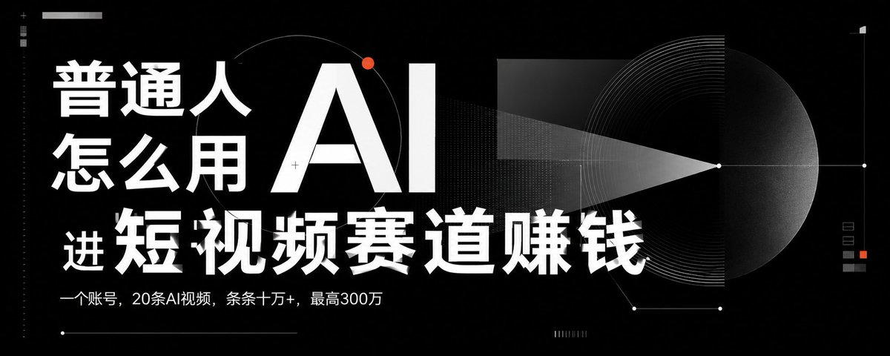

一个账号，20条视频，全部用AI生产。最差的曝光十几万。最好的，300万。 20条，条条十万+。 用AI把视频成本从500元压到5元， AI短视频工作流，我之前写过——两个30万粉账号，带出1.5亿GMV。 但今天我想写的，不是他的账号数据。 是我坐在他公司，亲眼看到的一件事。 我问他：这套工作流，普通人能复制吗？ 他说：能。 这篇文章，就是把这个答案写清楚。 先说行业在发生什么 就在这周，Snap宣布裁员1000人，关闭300多个岗位。 原因只有一句话：AI快速发展，让更小的团队能实现同样的产出。 Snap现在超过65%的新代码由AI生成，预计每年节省超过5亿美元成本。 裁员1000人，省5亿。 这不是互联网公司的特殊情况。这是整个内容行业正在发生的事。 短视频行业同样如此。 以前一条带货视频的生产成本：脚本策划500元，拍摄剪辑300元，运营跟进200元。一条视频出来，快则两天，慢则一周。 现在呢？ AI写脚本，10分钟。AI辅助剪辑，30分钟。一条视频，从零到成品，一个人，半天搞定。 成本从1000元压到100元以内。 这不是理论，是王总公司正在跑的现实。 ═══════════════════════════════
「Snap用AI裁了1000人，省了5亿——这笔钱，流向了哪里」 ═══════════════════════════════ 我在王总公司看到了什么 王总的公司不大。 武汉，一个普通的办公室，十几个人。 但他们在做的事，比很多百人团队效率高。 一个抖音账号，专注私域带货。 过去三个月，AI写脚本，写了20条视频。 我问他：这20条里，数据最差的是多少？ 他说：十几万曝光。 最好的呢？ 200万。有几条破了300万。 我当时沉默了一会儿。 不是因为数字大。 是因为这20条视频，从脚本到剪辑，几乎全是AI跑的。 人做的，是判断。是选题方向，是看数据，是决定下一条往哪走。 执行，交给AI。 这是我在他公司坐了一天，最深的感受。 这套工作流，到底是怎么跑的 分四个环节说。 环节一：AI写脚本 私域带货视频的脚本，有固定结构： 开场钩子（前3秒留人）→ 痛点放大（让用户觉得"说的就是我"）→ 产品植入（自然不生硬）→ 行动指令（引导私信或点击） 这个结构，AI可以批量生产。 王鑫的做法：把爆款视频的结构拆解出来，喂给AI，告诉它产品卖点和目标人群，让它按这个结构写脚本。 一次性出10条候选脚本，人来挑3条拍。 以前一个文案策划，一天出2-3条脚本，还不一定好用。AI一次出10条，质量稳定，速度快了10倍。 环节二：AI辅助剪辑 剪辑这件事，AI现在能做的是： 自动识别视频中的关键句子，打点标记。 自动匹配背景音乐节奏和画面切换。 自动生成字幕，准确率95%以上。 自动裁切比例，适配不同平台。 人需要做的，是最后的微调和审核。 以前一条60秒的带货视频，剪辑要2-3小时。现在，剪辑师用AI辅助，45分钟出成品。 速度快了3倍，质量没有下降。 环节三：私域引流 视频发出去，引流到私域。 这个环节，AI做的是： 自动监控评论区，识别有购买意向的留言。 生成个性化回复话术，不是复制粘贴，是根据每条评论定制。 在关键时间点推送私信，把评论区的意向用户引导进微信。 一个运营，以前最多管3个账号。现在，一个人配合AI，可以同时跑5-8个账号。 效率翻了一倍不止。 环节四：私域客户维护 进了微信的客户，怎么养？ AI帮你做： 按消费记录和互动频率，自动给客户打标签分层。 不同层级的客户，推送不同内容，不同频率。 节点自动触发：客户生日、上次购买后第7天、新品上架第一时间通知高意向客户。 这一套跑起来，复购率能提升30%以上。 不是靠人力堆，是靠AI识别每个客户的状态，在对的时间说对的话。 ═══════════════════════════════
「四个环节，AI全部介入——这就是王总公司的工作流」 ═══════════════════════════════ 20条视频，条条十万+，底层逻辑是什么 这个问题我问过王总。 他的回答很直接：AI负责执行，人负责判断。 说具体一点。 第一层逻辑：选题决定上限 20条视频能条条十万+，不是因为AI写得好。 是因为选题方向对了。 私域带货视频，选题有三个维度： 痛点够不够真实？ 产品解决方案够不够清晰？ 目标人群够不够精准？ 这三个维度的判断，是人做的。AI做的，是在判断对了之后，把这个方向高效执行出来。 选题错了，AI写100条也没用。选题对了，AI一次跑出10条，你只需要挑最好的3条拍。 第二层逻辑：数据是指挥棒 20条视频发出去，每条的数据都不一样。 完播率、点赞率、评论率、私信转化率。 王总的团队每天看这四个数字。 哪条视频的完播率高，说明开头钩子有效，下一条继续用这个结构。 哪条视频的私信转化率高，说明行动指令有效，提炼出话术复用。 哪条视频数据差，找原因，下条改一个变量，重新测。 AI提供了足够多的弹药，让你可以快速测试，快速迭代。 以前一周出2条，测试周期太长，等你找到方向，流量窗口可能已经过了。 现在一周出10条，3条发出去，看数据，下周继续优化。 第三层逻辑：私域是真正的护城河 抖音的流量是平台的。 私域的客户，是你的。 这套工作流最核心的价值，不是把视频做爆，而是把每一个被视频吸引来的人，沉淀进你的私域，变成可以反复触达的资产。 一条300万曝光的视频，如果只有平台数据，没有私域沉淀，下一条视频还得从零开始。 但如果每条视频都在往私域引流，100万曝光进来5000人，这5000人留在微信里，可以卖第二次、第三次、第四次。 流量是燃料，私域是发动机。 普通人，怎么用这套逻辑进场 王总的工作流，需要团队配合，需要对私域带货有深度理解，不是每个人都能直接复制。 但底层逻辑，任何人都能用。 路径一：做一个垂类账号，用AI批量测试选题 选一个你熟悉的领域。 不用是AI行业。可以是你做过的行业，你踩过坑的地方，你比普通人懂得更多的任何一件事。 用AI批量生产这个领域的内容，每周发5-7条，盯数据，找到爆款逻辑，然后复制。 关键不是AI写得好不好，是你对这个领域的判断力够不够。 AI是放大器，你的判断力是被放大的东西。 路径二：帮实体老板搭这套工作流，收服务费 王总这套工作流，大多数实体老板不会搭。 但他们有产品，有客户，就是缺这套系统。 你帮他们搭：AI脚本模板、剪辑流程、私域引流话术、客户维护SOP。 搭建费5000-20000元，月维护费2000-5000元。 一个客户，一年收入2-8万。接3个客户，这就是你的基础收入。 你不需要是王总，你只需要比你的客户懂AI。 路径三：跟有内容基础的人合作，你出AI系统，他出内容 这就是我和王总现在在做的事。 他有短视频内容基础，有私域带货经验。 我有AI工具链，有内容工厂逻辑。 两个人合作，搭一个新账号，用他的行业经验+我的AI系统，跑一套新的变现路径。 1+1不等于2，是10。 这种合作模式，在AI时代会越来越多。你有某个领域的深度，找一个有AI能力的人合作；或者你有AI能力，找一个有行业深度的人合作。 各出一半，把对方没有的补上。 ═══════════════════════════════
「一个账号，20条AI视频，最高300万曝光——这是真实发生的数字」 ═══════════════════════════════ 我在武汉，在做一件什么事 我从芭提雅回来，不是来旅游的。 是来看这套工作流跑通之后，下一步能做什么。 王总把短视频的AI生产流程跑通了。 我把内容工厂的逻辑跑通了。 两套系统，有重叠，有互补。 我们现在在做的，是把这两套系统整合成一套，专门服务那些想用短视频做私域带货，但不知道怎么用AI提效的实体创业者。 这不是培训课。 是实操服务。你的账号，我们帮你搭工作流，跑起来，看数据，优化，直到跑通。 这套东西值钱的不是工具，是已经被验证过的方法论。 王总花了多长时间跑通这套流程？ 将近一年。 踩了多少坑，花了多少学费，才跑出20条条条十万+的结果？ 只有他自己知道。 这就是为什么"找专业人来做"是一种判断力，不是偷懒。 三条规则 规则一：AI是执行层，你的判断是决策层。 让AI做它该做的，把你的时间留给只有你能做的判断。 规则二：数据是你唯一该信的东西。 感觉好的视频不一定数据好，数据好的视频才是真正有效的方向。 规则三：私域是终点，流量是手段。 每一条视频都要想清楚：这条视频的目的是什么？有没有引导进私域？进了私域之后怎么承接？ 总结三行 一、短视频行业的AI渗透已经发生，不是趋势，是现实。王总一个账号20条AI视频，条条十万+，这是可验证的数字。 二、这套工作流的核心不是工具，是选题判断力+数据复盘+私域沉淀。工具是人人能用的，判断力是你的护城河。 三、普通人的三条路径：自己做垂类账号、帮实体老板搭工作流、找有行业深度的人合作。不需要从零开始，找对方向，快速进场。 ═══════════════════════════════
═══════════════════════════════ 坐在王总公司里的下午，看数据，想着怎么把这套工作流复制给更多老板。
（日本語講準備中）